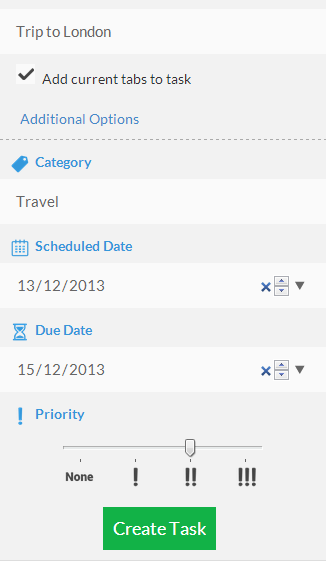
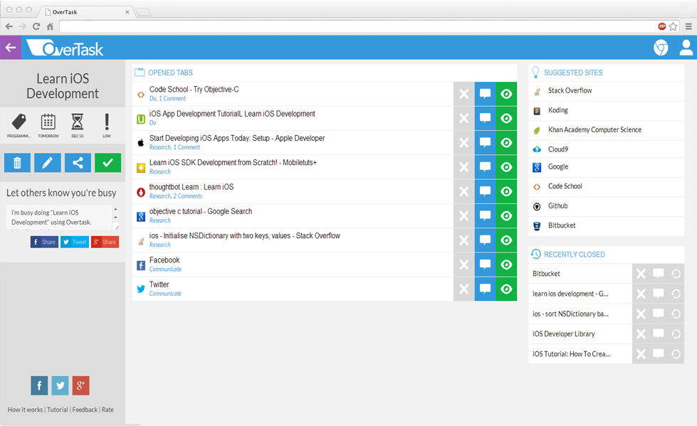
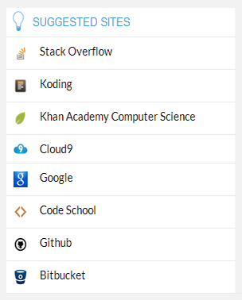

The web browser is built for distraction, and we want to fix that. Overtask works on a concept that encourages task-based browsing. By starting your browser sessions based on tasks, you can stay focused on your tasks and increase your productivity.
When completing a task, three main types of tasks are involved - doing the task, researching on how to do the task, and communicating with others to complete the task. This is why Overtask categorizes your tabs into three categories - Do, Research, and Communicate. You can also leave comments on tabs to keep track of them.
Overtask assists you in completing a task by providing a bunch of suggested sites related to the task.



A product of